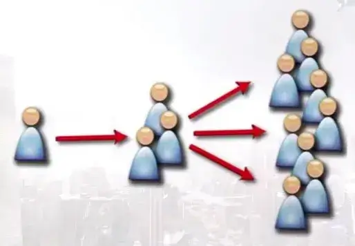

第五章 游戏中的社交
5-1 游戏中的社交
同学们大家好，欢迎大家回到游戏心理学的慕课。今天咱们开始一个新的章节，关于游戏的社交属性以及从市场的角度来看游戏。
曾经有个调查是针对 2000 多位母亲开展的，它的结果显示，2 岁的儿童群体当中，有 81% 的孩子已经和互联网产生联系，包括用即时通讯的软件跟家人视频，也包括收听收看互联网媒体的音视频内容。其中美国的比例最高，有 92%， 而西欧的数值约为 73%。随着互联网技术提高、基础建设加快、个人硬件设备普及，我们已经习惯通过互联网来获取内容，无论是音乐、电子书、影视剧还是游戏。
从这种消费心理来分析，其实游戏的载体可能是限制游戏价值的一个瓶颈， 现在比较流行的游戏内容提供平台大多数都不再卖载体了，或者是数字版和光盘版并存的一个状态。这里面包括像索尼、暴雪这样的更专注某些硬件和内容的厂商，也包括苹果商店、steam 这种为各类开发者提供服务的平台。现在更多的游戏玩家已经能够接受付费游戏的模式了，而游戏本身也会有不同的付费模式。比如说更趋近传统方式的就是购买游戏下载的许可，比如说索尼 PS 家族的游戏， 我们需要付费购买，然后就可以下载来玩，那么它更多是一次性的付费，更像是占有这个游戏本身，很多单机游戏尤其是 3A 级大作还是用这种方式来进行销售的，这部分玩家其实也是比较硬核，多数是乐于为内容付费的；另外一种呢，就是购买游戏的服务时间或者服务内容。从技术上来讲，购买游戏时间和服务内容是能够有效避免盗版的手段，而相应的，玩家对于游戏就不再是占有，游戏更像是一个平台，为玩家提供娱乐的服务，这就更适合网络游戏的销售，也不再限于对硬核玩家，而是让各种类型玩家都能去付费的一种方式，同时结合前面一个章节咱们提到过的玩家类型，研究不同类型的玩家也是始于网络游戏的，对于不同类型玩家会在哪些方面付费的研究也是基于网络游戏还有它们所提供的服务的。
所以其实研究有社交互动的网络游戏跟研究其他没有社交元素的游戏还是有很大不同的。这部分研究会涉及到社会心理学相关的诸多内容，我们后面的课程当中将会从这个视角来看待游戏的设计，然后也会一起来看看跟人的社会性相关的其他衍生的问题。
好，这节课先到这里，下节课再见。
5-2 玩家群体
同学们大家好，欢迎大家回到游戏心理学的慕课。
上节课说了，咱们这个单元的课程是来探讨游戏当中，人和人，玩家和玩家之间的关系，如果说前面咱们研究的是鱼，那么接下来咱们研究的就是鱼群和鱼群生活的水。
网络游戏区别于单机游戏一个特别明显的地方就在于：通过网络游戏，玩家能够跨越空间界限与身处异地的玩家成为好友，可以组队对抗强敌，可以参加公会加入阵营，总之是在不同规模的群体中相互交往，并且在这些相互的交往当中， 获得咱们前面提到过的归属感和被尊重的感觉。
在这里我们所谈到的群体，并不是简单说在某个网络游戏中的所有玩家，而是依照群体动力学家马文 · 肖（Marvin Shaw）的定义来判断。马文肖把群体定义成：为两个或更多互动并相互影响的人。在这个概念下来看，如果同学们同一时间都在学校的公共机房里上机却各做各的事，那么这些同学就不能算是一个群体。而虽然相隔千里，却在同一个游戏里共同刷副本的玩家，因为是在进行彼此之间的互动，这些互动又会互相影响，那么就可以说他们是一个群体。这个群体可能比较稳定，比如我们加入的公会或者帮派；也可能是临时的，比如说举牌召集在线的玩家来一起做任务的组队。
我们能够很容易理解一个群体一起去执行任务的时候，大家互相协作来提高战力。但这其中还有一种情况我们可能并没有特别注意到。那就是当有其他人在我们身边的时候——无论是现实中在我们背后看着我们玩，还是在游戏世界里旁观或者参与进来，我们玩游戏的状态跟自己一个人玩游戏的时候是有一些不同的。
在这儿咱们要提一个概念：纯粹在场。纯粹在场在社会心理学中是指：在场的他人实际上只是作为一个被动的观众或共事者存在，并不具有竞争性，也不会实施奖励或惩罚。换句话说，其他玩家纯粹在场是会对我们的游戏行为产生影响的。比如其他玩家只是在看着你在野外打怪的行为，没有抢怪也没有助战，那么他的这种纯粹在场会影响你的战绩么？仔细想想的话，很多时候答案是肯定的。 我们会把这种因为他人在场而超常发挥的情况称为“人来疯”。
有同学说了，身处群体的影响也不一定都能人来疯，或者说是有助长作用。 没错，这个问题法国工程师林格曼也发现了，他发现一个团体在筑坝之类的工作中，每个人所付出的努力，仅仅是他们单独工作时候努力之和的一半。简单来说就是，这与我们常说的“团结就是力量”恰恰相反，在某些集体任务中小组成员的努力程度反而比较小。
说实话，每次参加活动的时候一起鼓掌的人越多，我自己鼓掌的力气就越小。 随着群体规模的增大，我们个体付出的努力在减小。我们在游戏中最怕遇到的就是蹭经验搭便车或者划水的队友，而最极端的情况则是所有人都想划水，最终导致游戏任务的失败。
那么为了避免这种情况，我们激励群体成员的一种策略是使个体行为可单独识别，比如在组队任务中量化每个组队成员的成绩，并根据成绩提供奖励。对队员贡献的量化可以由游戏系统来进行，比如《泡泡堂》；也可以由队长进行分配， 比如《魔兽世界》。队长分配表面看起来比掷骰子缺乏公平性，但却是能有效降低群体懈怠的方法，同时也是增进组队紧密度、使队长的责任感和满足感都得到提升的方法。
当然，组队活动也不是总会引发个体的偷懒行为。当群体目标足够吸引人， 有需要每个人都尽最大努力才能完成的时候，团队精神会维持并增强个人努力程度。因此在《魔兽世界》中，高难度的组队副本不但没有沦为鸡肋，反而成为了玩家反复进行游戏的动力。
不过有很多研究也表明，在组队时，如果**组队成员彼此是朋友而非陌生人， 或是成员都认同自己的群体，那么懈怠也会有所减少。而对于陌生人群体来说， 有想与某人再见面的愿望也能提高团队的效率。**在班级中的同学之间的合作就比与那些几乎没机会再见的人之间的合作动机水平更高。而也有研究表明，女性会比男性更少产生社会懈怠——组队中女性玩家或许更值得信赖。
关于群体和组队就讲到这里，咱们下节课再见。
5-3 馈赠
同学们大家好，欢迎大家回到游戏心理学的慕课。
我们常常会从游戏中的好友那里收到虚拟礼物，包括鲜花、蛋糕、爱心等各种形式。有些玩家会接受这些虚拟礼物，然后把它们装饰到个人空间或者消耗掉这些资源，然后也回赠礼物，加入赠送礼物的群体。也有些用户就会像很多 Facebook 或者微博的粉丝一样排斥这些送礼物还有它们的信息，比如有的用户会说“我可不关心你的农场收了什么收成或者鱼缸里又养了什么新的鱼。” 这种情况在社交平台上比较容易出现，它主要是为了在一个非专门的游戏平台吸引新的玩家以及增加原有玩家的粘性。
**“馈赠”功能已嵌入众多热门的社交平台游戏当中，从游戏心理学的角度来看，这个看似简单的游戏机制是这类平台中玩家互动的重要方式，“馈赠”是玩家参与游戏活动的起点，同时也是一大病毒式营销策略，它能够丰富游戏活动， 提高玩家留存率。**显然很多游戏都是利用馈赠和互惠行为固有的社交心理法则。
赠送礼物是玩家互动活动的重要而复杂组成部分。它帮我们明确关系，强化好友和家庭纽带。哈佛大学心理学教授 Ellen Langer 认为，赠送者而非接受者， 是礼物馈赠活动的最大精神收获者。赠送他人礼物让我们能够巩固同他们之间的情感，让我们觉得自己富有成效，懂得关心他人。留心他人需求将会获得他人的情感。互惠心理在促进健康方面的重要性远超乎我们想象，灵长类动物通过梳理换取食物、保护或性交之类的东西，这些合作式交换有助于其健康，增加其生存机会或繁殖成功率，灵长类动物更倾向梳理那些曾经给予类似帮助的同伴而非只限于亲属。
在社交心理学中，互惠是指以积极行为回应另一积极行为，以消极行为回应另一消极行为，是种以牙还牙的回应。这和利他行为和社会馈赠不同，因为这两种行为不以获得积极回应为目的。在文化人类学和文化社会学中，互惠是定义人们非正式商品、劳动交换行为，设定价值和本土兑换率的方式。
美国著名人类文化学家马歇尔·萨林斯（Marshall Sahlins）认为互惠行为有 3 种形式：
一般性互惠是指不计价值的商品、服务交换行为，但他们通常认为价值会逐渐得到平衡。
**平衡或对称互惠是指希望获得同等有形回报的交换行为，通常数额、时间和地点都是既定的。**平衡性互惠是直接的非个人交换，精确计算是其特征。物品类型、价值及付出和收获期望值通常相差不大。
**消极互惠是指以获取利益为目的的商品、服务交换，通常会损及另一方利益。 其中包括经济学中的物物交换。**消极互惠的信任度极小，社交距离极大；这常发生在陌生人当中。消极互惠是非工业化社会各群体创建友好关系的普遍方式。
利用玩家期望获得回馈的心理，赠送虚拟道具是游戏在互惠行为中融入社交准则的方式。社交游戏咨询顾问 Tadhg Kelly 认为，游戏礼物经济活动的目标是让玩家领会到，如果他们尽可能多地送出礼物，他们将会在游戏中快速前进。“友好经济形态形成后，人人都能够从中受益。”《CityVille》等社交游戏其实是种利己社交，完全靠奖励驱动。法国社会学家 Marcel Mauss 认为，礼物馈赠表面看是自发的慷慨行为，但其实是有目的的活动，赠与者将其视作义务，这种行为是基于经济学的利己主义**。虚拟商品馈赠如今不再只是换取所需，而是变成出于自我利益，不顾及好友的游戏玩法。**
社交游戏《HealthSeeker》使用“称赞”作为其馈赠机制。称赞和礼物的不同在于它不是靠自我利益驱动。给予其他玩家称赞的目的是表扬和鼓励他们的健康行为，培养合作意识。融入馈赠机制的目的最根本是在于：人类都有相互联系和加入社区的欲望。我们渴望互动，希望进行社交活动。休闲社交游戏让我们能够保持同他人联系。游戏馈赠机制不过是迎合我们的需求，我们渴望加强同他人之间的联系，我们希望联络和试探他人，希望在赠送物品的同时传达“我仍然想着你”的信息。利用这一需求，将机制转向积极目的，让社交游戏为社会谋福利的力量。促进人类健康的游戏使馈赠机制产生积极影响，而不再仅是出于交换目的的游戏内容。
关于这节课就先讲到这里，咱们下节课再见。
5-4 嫉妒
同学们大家好，欢迎大家回到游戏心理学的慕课。
我们说网络游戏是一个世界一个社会，它虽然是数字化的，但是现实社会该有的东西大部分都有。比如上节课说的馈赠，也比如这节课要说的嫉妒。
荷兰心理学家范德温将嫉妒分为恶性和良性二类。在游戏中，恶性的嫉妒表现为：“某人获得了某些我想要的武器，我真希望他没有获得这件东西”之类的想法。但良性嫉妒是指其他人获得我们想要的东西，但是我们认为他们理应获得。 他们通过自己的努力获得了东西，或者说这是他们用心所取得的回报。
恶性的嫉妒会使人想方设法发现对方的弱点，把对方拉到和自己相同的水平上；良性的嫉妒会使人学习模仿嫉妒的对象，从而提高自身。
从这里我们能看出来，嫉妒能使人思维更敏捷，提升记忆力。但与此同时， 嫉妒也会带来损失。
在德克萨斯的研究人员做的一项实验中，让被试学生在观看某个有钱有魅力的同龄人的报道，随后进行一些困难的文字解谜测验。结果发现，与控制组相比， 被唤起嫉妒情感的学生，更快放弃了解题。这些人显然是自我耗竭的受害者。自我耗竭原本指当人们在自我控制的过程中，能量逐渐消耗，最终殚精竭虑，但其实嫉妒也可能会耗尽同样的资源。
恶性嫉妒是怎么来的呢？有研究认为是由于对于人类来说，在一个群体中的地位十分重要，因此当我们发现自己无法达到那个被嫉妒对象的地位时，会感觉自己吃亏了。但当我们体验到良性嫉妒时，我们不会想去破坏他人，而是自己尽量努力获得他们所拥有的东西，驱动我们去做缩小与他人之间差距的事情。这或许包括花费更多金钱来获得其他人拥有的产品。
比如在范德温的研究中，他让参与者在得知好友获得自己憧憬的实习岗位时候，体验到良性嫉妒，结果这些大学生参与者更加努力地学习，提高自己获得同等岗位的机会。在随后的研究中，他们对好友获得新手机也产生良性嫉妒，于是也都愿意多花 64% 的钱来购买新的手机。
说到消费的问题，我们看到在很多社交游戏中，玩家被要求去拜访好友，其实就是激发良性嫉妒的手段之一。我们所拜访的好友，尤其是 NPC 的空间，往往都发现有我们现阶段没有某些装备和道具，而我们最通常采取的行动则是为了获得同样的奖励而更加努力游戏，甚至会“头脑一热”，用真实货币来购买这些虚拟物品。而在抽卡游戏当中就更是了，身边朋友抽到了 SSR，我们也会热血沸腾， 然后就一起跳坑了。
激发良性嫉妒的另一个常用方法是游戏成绩的排行榜。
在投币式街机电子游戏的全盛时期，如果看到我们自己的名字出现在游戏高分榜单上是特别快乐的事，而看到自己被分数略高的用户取代而慢慢掉出榜尾， 则是个非常郁闷的过程。榜单上这些可能一直都见不到真面目的对手会促使我们持续在游戏机中投币，让我们有机会证明自己的技能超越对手。
到了当下，排行榜通常会取代高分榜，我们甚至还可以通过成就和战利品进行更细微的比较。随着游戏变得越来越具社交性，这类比较的重要性日益突出。 作为社交动物，我们所有行为的意义都源自于我们同他人的关系，社会比较无处不在。测试或游戏中的分数其实并没有太大的客观意义，它们的意义源自于我们的分数同他人分数所存在的关联性。
想要获得自身技能的准确信息是人类的本性，但即便是获得了数据，若没有语境，数据也会变得没有意义了。在这种情况下，我们转向将自己同其他人进行比较。比如说大家共同的敌人：“别人家的孩子”，我们倾向于跟某些方面同我们存在类似之处的对象进行比较，倾向于避免跟能力比我们高很多或低很多的对象进行比较。
因此对于排行榜来说，比较对象才是关键所在，其效果在它们呈现你在好友中的排位时最为显著，我们之所以愿意跟自己熟悉的对象进行比较，是因为我们要通过他们来判断自己是否能够获得某些技艺或成就。如果他们能够完成复杂任务，那我们对于自己完成此任务的信心也会与因为跟他有相关的属性而得到确立。
**有一句话叫“宁当鸡头，不当凤尾”，在表现不佳的群体当中，靠前玩家通常比那些在优秀群体中的滞后玩家自我感觉更好。**所以说要建立自己的信心其实很简单，去新手场玩一会儿就行了。从根本来说，当我们进行自我评价的时候， 倾向根据自己在小团队中的表现，而忽略团队相比其他团队的表现情况。在排行榜和高分世界中，这意味着提供我们在好友圈或小团体中排名情况的游戏比那些只是提供总体排名情况的游戏更能够吸引我们。你在 1 万 1092 名玩家中排名 6458？这俩数据有什么意义？远不如我们在 50 位好友玩家中排名第 5 那么有成就感和有动力，也远不如知道自己排名 49 时候能感到的那种沮丧。
所以在网络游戏里，如何来运用“比较”，将会是对玩家游戏体验和游戏动力来说都非常重要的课题。
好，这节课就讲到这里，咱们下节课再见。
5-5 价值最大化
同学们大家好，欢迎大家回到游戏心理学的慕课。
今天咱们来聊一聊“价值最大化”。价值最大化不是网络游戏才有的，但是网络游戏给价值最大化更丰富的表现，所以咱们放在这个单元来讲。
价值最大化从字面上就能够理解，就是要体现最大的价值。
玩家追求价值最大化有很多表现形式，比如出售战利品换钱、等待或者想办法提前刷新列表来购买最完美的武器、把治疗药剂用在数值相当的情境下、留存强力道具来对付最终的 boss、不浪随便费弹药等等。
在很多 FPS 游戏中，弹药数量是有限制的。玩家会去有计划地使用弹药，争取在走到弹药补给点附近的时候能够用掉身上的弹药，然后捡起补给。到了弹药补给点但是弹药满了不能捡，这对有些玩家来说可能是种莫大的折磨。有时候会出现很有意思的情况，比如说玩家不喜欢使用霰弹枪，但会特意用它来杀敌，因为这样就可以在弹药补给点得到霰弹枪的弹药，让这个弹药补给点的价值最大化。 在这种前提下，价值最大化便与武器偏好会产生冲突。
在货物和货币管理游戏中，价值最大化通常会给游戏的货物和货币层面带来大量的乐趣，即便它们相对整体游戏体验来说可能并不重要。在游戏临近结束的时候，价值最大化通常会受到抑制。除非二周目还能继承这些材料道具，否则玩家知道游戏即将结束，就会拿出最好的东西把它们用光。
咱们再来讲一个例子。玩家在《魔兽世界》中会去完成很多冒险任务，然后得到大量的物品。这些物品可以储藏起来，也可以放在拍卖行上出售。需要说明的是，价值最大化的需求不一定是利益驱使或以富裕为目的，而是让游戏给予我们的东西发挥出最大的价值。玩家玩《魔兽世界》的目的可能不是打金、操控拍卖行或其他能赚到钱的行为，而是尽力让自己已经做过的事情的能够获得最大的价值。
**在 MMORPG 游戏中，价值最大化包括三个关键要素：战利品、市场和限制。**在许多游戏中，玩家会无意间获得战利品，做任务过程中可能获得物品以及稀有随机掉落道具。连出售给商人的垃圾都是种有趣的可玩性元素，因为玩家必须决定携带或丢弃哪些物品。这不仅取决于物品的价格，还必须考虑物品是否可以堆叠以及接下来是否会得到更多的相同物品。尽管这些东西的货币价值很少，但回城出售时获得更多钱币也可以视为一种奖赏。
**第二个要素是市场。市场能够让玩家获得所有东西的实际货币价值，告诉玩家出售此物品会获得多少钱，以及购买此物品需要花费多少钱。**所以无论玩家何时得到东西，都需要从以下三种行动中做出选择：保留、在市场上出售或卖给商人、丢弃。如果玩家觉得可以让物品发挥出比货币价值更高的价值，他们就会保留它。比如，假设某玩家获得价值 1 金币的草药，而用这种草药可以制造出价值 10 金币的药剂，那么保留草药就显得更具价值。如果物品可以堆叠，玩家可能不会马上将其制成药剂，即玩家不需要即刻让商品体现其最大化价值。玩家也有可能因技能点不足而无法制作这种药剂，这样他也会选择囤积草药，希望其将来能产生更高的价值。然而玩家的存储空间通常有限，这也正是游戏中的强大市场决定价值最大化是积极还是消极因素的关键所在。市场越强大，市场销售中的价值越稳定。换句话说，如果玩家有些以后可能会用到的物品，但已没有足够的空间储存，他们能否现在出售，在需要时再购回呢？此类市场交易的成本越低，玩家出售这些资源时候的纠结程度就越低。
第三个要素是限制。许多 MMORPG 中玩家无法选择所有的制造技能。有的游戏里只让玩家选择一种或两种专业技能，在有的游戏里，玩家可将每种技能提升到一定程度但不能完全修炼，玩家要从中选一种来提升到 100%。这种设计的结果是，玩家必须直接或通过中间市场进行交易，才能获得所有通过制造产生的东西。
限制要素在保留和卖出两种选择之间创造了更多的策略和玩法。对武器锻造师来说，矿石比布值得保留，对裁缝而言，布比矿石更为贵重。所以玩家会用他们得到却无用的材料换取可以使用的材料。这种交易经常通过市场系统开展，玩家出售无用材料获得钱币，再花钱币购买有用的材料。
所以在制造技能中，三种价值最大化元素紧密结合起来：玩家在玩游戏的过程中获得材料（战利品），但他们无法使用所有获得的材料（限制），于是将无法使用的物品换成可以使用的东西（市场）。整个游戏的社会性就这样构建出来了。
好，这节课就讲到这里，大家回头去看看自己喜欢的游戏里价值最大化的体现，咱们下节课再见。
5-6 网络游戏盈利方式
同学们大家好，欢迎大家回到游戏心理学的慕课。
今天我们一起来说一说有关于网络游戏盈利方式的话题。
我们前面说网络游戏，一直强调它的社交属性。今天咱们首先来明确一下， 咱们所说的网络游戏，就是看它在游戏过程中是不是需要互联网的支持和服务。
我们所熟知的，能够玩游戏的方式其实挺多的，而这些方式归根结底其实就是游戏开发者或者运营商获取收益的办法。
**最早在街机时代，是靠投币来获取游戏机会的。**投币之后其实对玩家游戏时间的限制是两重的。首先是与玩家的游戏技巧有关，技巧不足那么游戏时间就相应会减少；而即使游戏技巧足够好，大多数游戏也是只能玩到通关。玩家得到的奖励呢，除了长时间的游戏之外，还有前面课上咱们提到过的，会出现在游戏的高分榜上面。
**随后的家用机和单机的电脑游戏，主要是靠出售有载体的游戏内容来回收开发成本和实现盈利的。**大家课后可以去了解任天堂和索尼等等公司对于第三方开发游戏的一些支持和限制，也挺有意思的。那么在这个时期呢，玩家付费就能够得到这个游戏的永久使用权。这样一来呢，是只要硬件还能运行，游戏载体，光盘或者游戏卡带还能读取数据，那么游戏就一直能玩，不需要再付费。另一方面呢，这种付费方式其实给我们一种错觉，那就是我买的是这个光盘这个卡带的物品，而可能会忽视了它所存储的内容其实才是最有价值的。所谓盗版，就是把游戏内容的价值忽略等同于它的载体的价值，一张光盘也就 5 块钱，要卖我168， 你要上天吗？后来我们这些聪明的技术宅都可以破解游戏主机了，甚至有了网络之后又可以免费下载到各种游戏资源，那就连光盘的钱都省了，是吧。
**网络一方面是给盗版提供了各种便利，但同时也是给游戏一个新的机会去建立更适合的盈利模式。**所以我们现在看到的单机游戏，尤其是电脑的单机游戏是在减少的，而需要网络服务来支持的游戏就越来越多，而且盈利也有了一些经过验证的模式。包括销售游戏时间，销售游戏服务，以及免费体验付费解锁等等。
销售时间的游戏主要靠点卡等方式，玩家参与游戏的时间直接折算为收益。 **销售服务的游戏提供免费游戏时间，但玩家需要付费才能享受全部游戏服务和道具使用权。**而很多游戏则是开放前几关作为免费体验，而当玩家认同了游戏想要继续获得全部内容的时候就需要付费来解锁。最后这种呢，其实本质上也还是单机游戏，所以咱们后面再讨论的时候就不太涉及它了。
那么无论是销售时间还是销售服务，留住玩家都是游戏的首要任务。因此在游戏行业越来越重视数据分析的趋势下，用户留存率也成为开发商和运营商越来越重视的数据指标，通常呢会用月活跃用户、日活跃用户、次日留存、七日留存等等数据作为标准参数，来考察一款游戏的用户黏性。
玩家自某段时期开始玩游戏，在一段时间之后，仍然还在玩这个游戏，就能够被认做是留存了；这部分玩家占当时新增玩家的比例，即是留存率。
每款游戏都会从新玩家开始，而随着时间流逝，会不断有人离开，也就是留存不断下降，直到游戏的生命期结束。如果把这些数据绘制成图表，我们很容易看到这是一条呈下降趋势的曲线。对留存做分析时，不会只看一个总体留存率数据，而是要观测这条下降曲线的走势。
对留存进行分析的最常用方法是以日为单元，观察某日的新增玩家在随后每日的留存情况。留存虽可能受到游戏本身质量还有运营等等多种因素的影响，但在推广渠道和游戏版本不变的情况下，每天的留存曲线不会有很大差异。随时间推移，玩家的留存通常会有三个时期：
**流失期——玩家进入游戏之后最开始的几天是流失量最大的时期，留存率显著下降，是流失期。**很多游戏都会提到“次日留存”，这个指标是对游戏质量非常直接的反映，还可以在一定程度上说明玩家首次体验的满意度。
蒸馏期——在经过几天大幅度流失后，用户留存会进入小幅度下降时期，这就如同是蒸馏过程，是蒸馏期。
**稳定期——经过一段时间蒸馏后，玩家的留存会呈现出一种很稳定的态势， 不会有明显的增减，可称为稳定期，这段时间会保持较长时间。**从总体来看应用的留存，应该看进入稳定期后的平均留存，这才是留存率的真实水平。留存稳定期所保留下的玩家，是最有价值的，他们提供了大量的流量，相对的各项转化率也会更高。
好，这节课就讲到这里，咱们下节课来看看提高玩家的留存能有那些方法。
5-7 提高玩家留存
同学们大家好，欢迎大家回到游戏心理学的慕课。
上节课说到了玩家的留存，这节课我们来说说要提高玩家的留存，我们可以用到哪些心理学的技巧。
这次咱们用那些社交平台常见，你可能喜欢，也可能厌烦的有模拟经营类的游戏来举例。无论是种地的，开店的，还是建立一个什么组织的，选择一个你曾经玩过或者看过的游戏，咱们来建立表征。一边听我说，一边跟你玩的游戏来进行联系。
我来用社交网站上“种地”类游戏来做最基础的例子，因为这类休闲游戏其实用户留存是挺不容易的。那么它们在提高玩家留存的时候就可以用到我们此前提到的很多心理学技巧：
1 创造故事情节和游戏角色：让玩家愿意回到游戏中观看游戏情节的发展。 所有的连续剧都会努力让观众心系着故事情节，让观者想要回到屏幕前去看他们喜欢的角色和情节的发展。有的剧是在一集的结尾埋下情节发展的伏笔，有的也会在一季结束的时候抛出悬念。同样的，如果在玩游戏的时候玩家是操纵主要的游戏角色，游戏要求玩家来选择故事情节的发展，那么这实际上比单纯看一个故事在别人的设计下往前走要更让人期待。玩家也会在离开游戏之后想要再重新回到游戏中，继续推动游戏角色的行动和情节的发展。
2 “超额”的任务：不论玩家的游戏时间是一小时，一周还是一个月，游戏都需要为他们安排任务。咱们前面说了，任务能够让玩家不至于无所适从，而稍微多一点点的游戏任务，这种“超额”的任务清单的出现，会让玩家产生一种“不完整感”，而因此想要尽可能地回到游戏中，继续挑战并完成游戏任务。
3 收集：咱们前面讲了，收集是玩家的基本需求之一，出于各种原因，我们喜欢去收集一些“战利品”。这种收集系统实际上能够帮助开发者盈利，同时， 同样是要去消除不完整感，玩家为了达成全收集甚至可能会反复进行游戏。
**4 错过：**我们在手游页游中都能看到各种应景的活动，这些活动一方面是给坚持每天登录的玩家一些新的游戏内容，另一方面是为了诱惑离开游戏的玩家。 因为这部分玩家如果能够及时回到游戏世界里，就能体验到这些活动，在一个特殊的热闹的大环境里重新找到这个游戏的乐趣，并且获得相应的特殊奖励。而玩家如果没能在活动的时候重新回到游戏中就可能会感觉遗憾。人类的这个心理啊， 本来我能得到但是没有得到，就是特备难受的，还不如不要让我知道我错过了什么，对吧。不过这种方法只能称得上是短期战略，如果长期使用将会适得其反。因为咱们还有一句老话叫虱子多了不咬，债多了不愁，一旦玩家发现他们因为游戏而错失了更多东西的时候，他们可能会对游戏彻底死心，再也不会回到游戏中了。
**5 让玩家能够积极愉快地跟好友进行交流：**我们在下节课说游戏推广的时候会说到病毒式传播。从名字能看出来啊，它其实是具有一定的隐患和不那么讨人喜欢的，但是从用户留存考虑，不应该将病毒式传播与用户留存机制完全分离开来。很多游戏，不光是手游页游也包括端游，很多玩家是因为想和好友一起游戏而开始游戏的，而他们也会更容易因为朋友在玩游戏而重新回到游戏里，因为朋友都离开游戏了而自己也选择离开游戏。所以提供玩家与好友一起游戏的机会， 让玩家在游戏中有更多的好友的支持和相互“勾引”，也可以说是一种非常有效的用户留存方法。
好，几种常见的提高用户留存的方法我们介绍得差不多了，大家开动脑筋想一想，无论是你体验过的还是没体验过的都可以，还有什么样的方法也许能够让玩家回到游戏里来呢？这节课就讲到这里，咱们下节课再见。
5-8 游戏推广
同学们大家好，欢迎大家回到游戏心理学的慕课。
这节课咱们来聊一聊游戏推广。
游戏行业迅速发展的环境下，各类型题材的游戏新作也是层出不穷，无论制作者是大公司还是小团队，无论是电脑、家用机还是移动平台，都面临向玩家推广游戏的问题。但无论如何，如果没有足够的下载量，用户留存会受到玩家基数的影响，最终的结果也会不尽人意。这个很好理解，留存率同样是10%，100 个新玩家的 10% 是 10 个人，1000 个新玩家的 10% 就有 100 人了。
咱们前面讲了说游戏目前的盈利方式，有预付费，也有购买服务等等很多方式，所以玩家是已经有消费行为或者是可能会有消费行为的群体，所以我们也把他们成为消费者。
在分析消费者的行为的时候，我们可以发现啊，在消费过程中是普遍存在一种规律的，这就是：刺激–心理活动–消费行为。
在游戏的推广中最常用的刺激就是各种形式的广告，既包括传统意义上通过媒体发布的广告，游戏的主要广告媒体不是电视台或者广播，而是什么？对，互联网。我们会在这个游戏的目标玩家可能常去的网站看到游戏的宣传，可能是浮动窗口的动图也可能是条幅或者固定栏位这种形式，同时呢，也包括新兴于在社交网络这个媒介当中的病毒式传播。
我们说广告媒介，是传播广告信息的载体，而不同媒介呢，有各自不同特点， 存不存在对所有消费品都堪称完美的媒介？不存在。那么结合要做广告的消费品各自的特点，它们在选择广告媒介的时候也就会不相同。
咱们说传统媒体，比如说期刊杂志、报纸这类我们说叫平面媒体，它的特点是什么？是有着比较强的权威性和公信力。当然咱们说的是有正式刊号的这些正规出版物啊，印个小册子上街发那不算。我们现在可能也会觉得说有些平面媒体也有不靠谱的，但是总体来说，我们还是会相信有公信力的平媒所发布的信息。
传统媒体还有什么呢？电视台、广播台。电视出现之后，广播也是受到了很大的冲击，而当代中国，随着汽车的普及率和使用率的提高，在互联网新媒体的攻势之下，广播电台受到的冲击反而会比电视台要缓和一些。为什么呢？没错， 开车的时候可以听音乐听广播，但是不合适用眼睛看片。电视台广播台也是比较有权威性和公信力的媒介，咱们现在说谁谁谁上电视了，尤其说上央视的节目了， 仍然会觉得是个比较稀罕而且有点儿面子的事。
那么这些有权威性和公信力的媒体是不是适合游戏的推广呢？我们想象一下，将来新闻联播前面的广告变成某某游戏，5 月强力上线之类的广告词，好像也是特别有冲击力的。这在未来或许有一天会成为现实，但是现阶段还是不太可能。原因很多，但是其中一个重要原因就是：这个游戏的目标玩家跟新闻联播的观众，是不是同一群人。也许未来有一天，这两部分人群会重合，但是现阶段新闻联播的覆盖范围与大多数游戏的目标玩家是错位的。
当下，我们能看到游戏的最广大用户群体在哪里？在有网络使用习惯、移动产品使用习惯以及有游戏习惯的人群，因此游戏广告最大规模的投放目标，也应该是在互联网、移动服务，还可以是视频媒体的游戏节目贴片等等。
**在游戏广告策划和制作的时候，其实更多是努力调整广告让它更符合消费者的思维。**我们在生活中能看到很多广告，比如说烟草广告会展示令人愉悦的漂亮画面而不会直接说鼓励消费者吸烟；可口可乐的广告总是用让人感到快乐、青春和活力的形象与实物相联系而不会靠营养成分的证据来吸引消费者；运动用品、 服装鞋帽等商品总是聘请冠军和明星代言，这类广告所运用的方法其实是外周说服。
所谓外周说服，是从话语产生影响力的途径来说的。
通常来说啊，要让话语产生影响力，我们通常有两条途径，一种是中心途径， 一种是外周途径。
大家都有这种体验啊，**如果我们被某种动机所引导，而且有能力全面、系统地对某个问题进行思考的时候呢，我们就会去关注这个能够为思考提供帮助的东西，比如说论据，这时候就会更多的被中心途径所主导。**如果说论据令人信服，我们就很可能被说服。这在买汽车、电脑、手机之类的的东西的时候，可能会去考虑它的配置性能，也就是论据。根据参数来说这个产品的性能比另一个好，说服我们在充分比较之后去购买。
而外周途径呢，是说有时候有没有论据都不重要了，因为我们可能处在一个没空仔细思考的状态，不会花太多时间推敲论据或者信息是不是科学可信，而是通过外周途径，从那些更可能让我们直觉就接受的外部线索会对我们有更大的影响。
那么，对海报、宣传片之类消费者比较少主动关注的媒体来说，视觉形象就是一个有代表性的外周线索，我们能看到很多产品的广告不去说自己的产品有多好，而是请明星代言，或者是建立一种概念，然我们觉得说我买了这个产品，就会和广告里说的一样有格调了。
所以咱们前面说的电脑广告很少请明星，而是说自己续航有多强，玩游戏不卡顿，对吧。选择游戏的时候，大多数时候可能会根据这个游戏的类型、策划、设计等等来选择，什么时候会请明星代言呢？可能是游戏 IP 本身自带的，也有时候是面对大量同类游戏的时候的一种策略。
那么说到这里，下面又是请各位同学课后来做的事情了，请大家来观察一下， 我们平时是从什么渠道来了解新游戏，并决定试玩或者购买的呢？咱们下节课再见。
5-9 病毒式营销
同学们大家好，欢迎大家回到游戏心理学的慕课。
这节课咱们看这个单元的最后一个话题，也是接着上节课的游戏推广继续来讲。上节课请大家来观察和反思游戏常用的推广方式。这其中就有一种我们今天要重点来说的：病毒式营销。
病毒式营销是最近两年随着这个互联网 2.0 时代被我们熟知的一种营销方式，是一种网络营销的常用手段。**它是利用口碑传播的原理，让“口碑效应”像病毒一样以低成本、高效率的传播。**在病毒传播的例子里我们可以看到，有的是从经济层面入手的，有的是从精神层面出发的，目的都是找到那个我们在意的点， 勾起我们自居自愿把这个内容或者结果给别人的欲望。
一个人传播给几个人，这几个人再以各自为中心传播给更多人，用快速复制的方式把信息传向数以万计的受众。大家如果关注微博等等平台就可以看到很多类似的数据可视化信息，一条信息从一个原点发布出来，那么可能根据原贴的粉丝数量，初次转发的量会有所不同，这些转发构成了这张图当中的这些花的花瓣， 那么转发之后就会有更多小花和花瓣；也会有一个大 V 转发之后，开出来的花比原贴还要大的情况，也会有很多大小类似的花互相关联的情况等等，有兴趣的同学可以课后再多花些时间了解这方面的内容。我们在这里通过数据可视化的图能够很清楚地感受到病毒式传播的广度。

大家在刷微博或者其他平台的时候可能觉得，我关注了很多人，能够获取很多不同的信息。但是实际上，你关注的人越多，关注的效率就越低；同时，你也会发现，有时候会被同一条信息刷屏，也会在看某一个信息的回复跟你的观点相似的会很多，有时候我们会说这是“看评论就放心了”系列。但是这其中有一个问题，就是你关注的对象大多数是跟你三观相符的博主，这些博主如果不是特别红的大 V，关注他的又是三观相近的粉丝，所以我们其实是在关注这个时期就已经开始做了信息的筛选，你看到的其实是你想看到的信息，而不是所有信息。即使是大 V，也会有类似的情况，只不过评论人数更多，更需要花费时间去统计。
所以即使是在网络中，我们也还是有圈子的，那么这也就是病毒式传播能够比较精确地锁定人群的原因之一。发游戏的广告，找个游戏圈的大 V 试玩发实况，或者写软文，方法很多，那我们也来总结一下，来看病毒式传播的常用方式， 一共有 6 种：
1、原生传播
最原始的一种病毒式传播，可以称得上是口碑效应。**简单说就是如果游戏足够好，自然会让玩家转变为“传播者”。虽然刚开始这种传播效果并不明显，但经过一段时间后，就会出现爆炸性的增长。**当然这种方式效果最好，但也较难实现。它还有一种变体：话题效应。当人们愿意讨论这个游戏或者和游戏相关的事件的时候就会孕育出话题。如果游戏确实好，或者出现了一个很值得讨论的话题， 那么我们在讨论的时候就会记住这个游戏或者它的相关信息。与此同时，这种效果其实也不太好把握，因为如果话题只是游戏制作人的八卦信息的话，很难知道有多少人会因为这个八卦信息而去玩这个游戏。而且话题绝对是有好有坏的。如果为了提高关注度而制造反面话题，比如说某某游戏涉嫌抄袭，想用这个来提高关注度，那可能就不是病毒式营销，而是公关危机了。
2、协同传播
我们在玩游戏的时候会有感受，一个游戏对我们单独一个玩家来说肯定是有价值的，无论是从获得的快乐还是满足需求方面来说。但是它的价值还不限于此， 如果我们推荐使玩这个游戏的玩家越多，这个游戏对我们自己来说产生的价值就会越大，进而也就会形成病毒式传播。比如说很多手机游戏会有体力限制，**当你体力不足的时候，可以给好友发消息请好友发免费的体力给你。如果没有好友， 你就只能等着体力恢复或者氪金。**硬核玩家也希望在联机的时候有能信赖的朋友一起玩，而不是随机匹配到不合适的队友，这时候就会更加体现出我们对于拉更多人入坑的需求了。
3、签名效应传播
这个在游戏圈里不是特别多，主要是**通过某种交流工具最后加上一个签名。 这个名称的反复出现，会让我们记住这个产品。**比如使用某种工具定期、群发、设定对象的发送邮件或微博时，对方收到的内容最后经常会有“由 XX 工具发送” 类似的标注，久而久之就会记住这个东西，然后也可能自己去试用，我们经常会在别人的微博下看到类似的标注和签名。
4、激励传播
我们在一个游戏里邀请了其他人加入的时候，系统会给与相应的奖励，就像很多手游会给你特殊的道具、发放金币等等。这种策略虽然很简单，但屡试不爽。 因为对玩家来说就是动动手的事情，利用不去尝试可能就会错失的这种感觉，咱们前面说过了，也是很有效的。不过我们反复收到朋友发过来的邀请，也是挺烦的一件事，我不想玩，你还老邀请我，取关，拉黑。所以在去邀请别人的时候， 也是需要玩家考虑邀请的对象和频度的。
5、植入传播
这种病毒式营销非常适合内容性网站，比如以文章、视频、资料等为主要内容的网站。在这些内容里面，**把信息植入进去，这样无论这些内容怎样传播，信息都会被用户看到。**这看起来像是“软文”，但其实并不是软文。最简单的例子就是现在已经泛滥的视频广告，在感天动地、制作精良的短片结尾呈现品牌名称。 在游戏圈里可能比较有代表性的就是网游文，看了小说之后想去玩游戏的人，也会有不少。
6、社交传播
**这种传播依附现有的社交网络，当玩家开始玩游戏以及获得什么成就的时候，社交网络会将相关信息显性或隐性地传播给其他用户。**微博、朋友圈等等我们总能看到，朋友又发了一条，说获得了什么了不起的道具，获得了多高的分数你要不要来挑战之类的。如果这个信息做得足够吸引人，吸引新用户的速度就会变得更快。因此很多网站、应用和游戏会通过 Facebook、微博等社交网络来授权注册账户。
说到这儿大家就发现，咱们身边多得是套路。正是因为这些套路符合了传播心理和消费心理，所以它们也被证明是非常有效的。好，这节课咱们就讲到这里， 下次课再见。